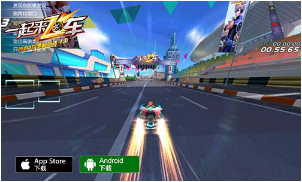
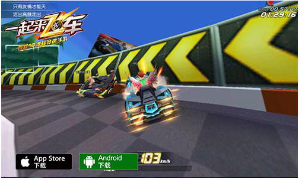

绝对实力的车王之争 《一起来飞车》竞速模式完全解析
诠释速度极限，4亿手机玩家的漂移狂欢!作为首款3D漂移竞速手游，《一起来飞车》首度在手机中实现了纯正的漂移，让玩家可以真正体验掌上竞速的激情。相对于游戏中个人、组队道具模式的娱乐，地图排行的个人技术展现，实时对战中的竞速模式则更受追求纯正竞技玩家的热捧。那么，《一起来飞车》中的竞速模式究竟有何魅力呢?现在，让我们一起来详细探究。
【快速加入 超丰富地图等你体验】
《一起来飞车》中的竞速对战，在玩家新手引导完后便将自动开启。选择对战后，玩家既可以快速随机加入其它玩家的房间，也可以自己创建房间。在自己创建的房间中，玩家可以选择地图是随机还是指定，丰富的地图可是会给玩家带来截然不同的漂移竞速快感，其中备受玩家热捧的125秒竞速地图“水晶矿山”，便是玩家挑战频次最高的地图之一。而如果想跟其他玩家来场私密的对决，为房间设置密码也是必须的选择。同时，随着玩家等级的提升，所开放的地图也会越来越多。
【不同竞速体验 个人组队自由选择】
在《一起来飞车》的竞速模式中，有个人、组队两种模式供玩家自由选择。相对于可以尽情释放激情与技术，追求更快速度跑完全程的个人竞速;组队竞速则对团队整体实力都有一定的要求，想要胜利可是需要团队每位成员的努力。同时，获胜难度较大的团队竞速，奖励也是更加丰厚，金币和经验的奖励可是玩家提升硬件实力必不可少的物品。
【漂移竞速 经验技术缺一不可】
作为极为公平、公正，拥有极高竞技性的竞速模式，想要在赛道上全程达到完美的漂移，从始至终享受急速飞驰的快感，个人技术、赛道经验都非常重要。而在个人技术中，漂移作为竞速的核心，其中的双喷、落地喷、多段连喷等等漂移技术，都需要经过长时间的磨炼才能轻松实现;而面对长度不同、弯道数量不同、弯道度数不同的各种赛道，也同样只有一次次的尝试，才能对它们了如指掌，进而获得更好的成绩。

【完美漂移 追求极致速度】
完美的漂移是决定一场比赛胜负的关键，因此如何在弯道甚至是直路上进行合理的漂移就显得尤为重要。漂移主要分为普通漂移，长漂和连续漂移三种。普通漂移，顾名思义就是在直路或者经过直角弯时候采取的最普通的漂移手法，当车头调整到理想位置后立即松开漂移键，即可实现加速，在获得Perfect评价后，还可以再次点击屏幕进行二次加速。长漂主要是针对U型弯所采用的一种漂移手法，这种漂移的持续时间较长，行驶方向需进行180度调整，通常一次长漂可以积攒一整管的氮气。长漂的关键在于开始漂移的时机，一定要在弯道开始的两个车位左右的位置就开始漂移，不然容易发生尾部撞墙的情况。连续漂移主要是应对比较长的弧形弯道所采取的漂移手法，其中的主要难点在于进行每次短漂后要不要单次点击屏幕，否则发生二次加速，容易车头发生碰撞，不利于下次短漂。

纯正的漂移竞速，极致激情的速度冲击!《一起来飞车》中的竞速模式，让玩家可以真正凭借自己的技术与经验，创造一个个传奇。随着终极删档测试的开启，《一起来飞车》125秒挑战赛也即将拉开帷幕。届时，在HPL赛场上展现自己的实力，在125秒挑战赛中奋力飞驰，赢得两百万奖金，争夺飞车至高荣誉和惊喜的现金奖励，是不是更加让人热血沸腾呢?